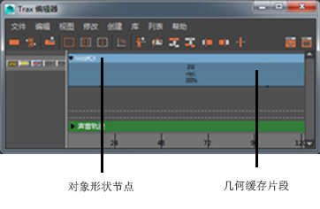

在“Trax 编辑器”(Trax Editor)中，几何缓存节点由几何缓存片段表示。使用这些缓存片段，可以清晰地查看几何缓存之间的关系并以非线性方式编辑缓存的变形。这使您可以直观地同时管理和操纵所有对象的几何缓存。
注： 几何缓存片段仅存储对象顶点的 XYZ 位置，而不存储对象的变换节点的平移、旋转或缩放。
查看几何缓存片段
- 在查看对象的几何缓存片段之前，首先需要缓存对象的变形。请参见创建和编辑几何缓存。
- 在场景视图中，选择要查看其几何缓存片段的对象。
- 打开“Trax 编辑器”(Trax Editor)，并选择。
选定对象的所有几何缓存节点都将作为缓存片段加载到“Trax 编辑器”(Trax Editor)中。每个片段都放置在它自己的轨迹上，并且对象的所有缓存片段都在对象的形状节点下进行分组。

从 Trax 中选择几何缓存片段的对象
- 在“Trax 编辑器”(Trax Editor)中，选择要在场景中选择其对象的几何缓存片段。
- 在轨迹视图中，在缓存片段上单击鼠标右键，然后从显示的上下文相关菜单中选择“选择几何体”(Select Geometry)。
现在已在场景中选中了缓存片段的对象。